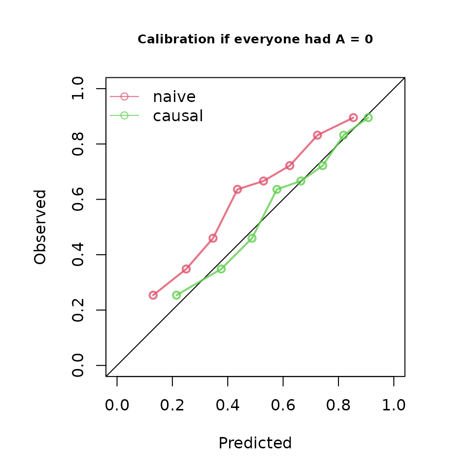
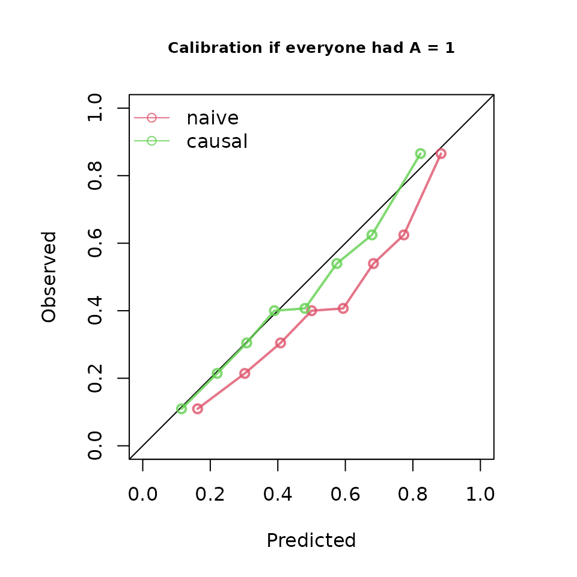

Calibration under interventions: rticausal and ipeval
Source:vignettes/ipeval-calibration-comparison.Rmd
ipeval-calibration-comparison.RmdThis article reproduces the point-intervention calibration example
from the ipeval
vignette and compares the resulting calibration curves with
rticausal.
The statistical target is the same: calibration of predicted risk
under a specified intervention against the inverse-probability-weighted
observed outcome in the corresponding pseudo-population.
ipeval estimates the treatment weights from the supplied
treatment model; rticausal deliberately requires those
weights to be supplied by the caller.
rticausal defaults to 10 calibration bins, matching
rtichoke. This comparison explicitly sets
n_bins = 8 to reproduce the default calibration grouping
used by ipeval.
Example data and prediction models
library(ipeval)
library(rticausal)
simulate_data <- function(n, seed) {
set.seed(seed)
data <- data.frame(id = seq_len(n))
data$L <- rnorm(n)
data$A <- rbinom(n, 1, plogis(2 * data$L))
data$P <- rnorm(n)
data$Y <- rbinom(
n,
1,
plogis(0.5 + data$L + 1.25 * data$P - 0.9 * data$A)
)
data
}
df_dev <- simulate_data(n = 5000, seed = 1)
df_val <- simulate_data(n = 10000, seed = 2)
model_naive <- glm(Y ~ A + P, family = "binomial", data = df_dev)
trt_model_dev <- glm(A ~ L, family = "binomial", data = df_dev)
propensity_dev <- predict(trt_model_dev, type = "response")
iptw_dev <- 1 / ifelse(df_dev$A == 1, propensity_dev, 1 - propensity_dev)
model_causal <- glm(
Y ~ A + P,
family = "binomial",
data = df_dev,
weights = iptw_dev
)
#> Warning in eval(family$initialize): non-integer #successes in a binomial glm!
# ipeval estimates validation-set treatment weights from A ~ L internally.
# rticausal consumes caller-supplied weights, so fit the same treatment model
# explicitly for the comparison below.
trt_model_val <- glm(A ~ L, family = "binomial", data = df_val)
propensity_val <- predict(trt_model_val, type = "response")
# Match the colors used by ipeval::plot.ip_score().
ipeval_colors <- grDevices::adjustcolor(
rep(grDevices::palette()[-1], length.out = 2),
alpha.f = 0.8
)If nobody were treated: A = 0
For rticausal, predictions are generated for every
validation subject after setting treatment to 0. The weights for
subjects who were actually untreated are the inverse probabilities of
receiving no treatment.
pred_0 <- list(
"naive" = predict(
model_naive,
newdata = transform(df_val, A = 0),
type = "response"
),
"causal" = predict(
model_causal,
newdata = transform(df_val, A = 0),
type = "response"
)
)
weights_0 <- 1 / (1 - propensity_val)
score_0 <- ip_score(
object = list(
"naive" = model_naive,
"causal" = model_causal
),
data = df_val,
outcome = Y,
treatment_formula = A ~ L,
treatment_of_interest = 0,
metrics = "calplot",
null_model = FALSE,
quiet = TRUE
)Comparison
plot(score_0, main = "Calibration if everyone had A = 0")
create_calibration_curve(
probs = pred_0,
reals = df_val$Y,
treats = df_val$A,
intervention = 0,
weights = weights_0,
n_bins = 8,
size = 500,
color_values = ipeval_colors
)If everybody were treated: A = 1
pred_1 <- list(
"naive" = predict(
model_naive,
newdata = transform(df_val, A = 1),
type = "response"
),
"causal" = predict(
model_causal,
newdata = transform(df_val, A = 1),
type = "response"
)
)
weights_1 <- 1 / propensity_val
score_1 <- ip_score(
object = list(
"naive" = model_naive,
"causal" = model_causal
),
data = df_val,
outcome = Y,
treatment_formula = A ~ L,
treatment_of_interest = 1,
metrics = "calplot",
null_model = FALSE,
quiet = TRUE
)Comparison
plot(score_1, main = "Calibration if everyone had A = 1")
create_calibration_curve(
probs = pred_1,
reals = df_val$Y,
treats = df_val$A,
intervention = 1,
weights = weights_1,
n_bins = 8,
size = 500,
color_values = ipeval_colors
)The two packages use the same eight rank-based calibration bins for
this comparison. rticausal keeps the established rtichoke
presentation, including the prediction histogram, while the
intervention-specific calibration coordinates follow the
ipeval calculation.